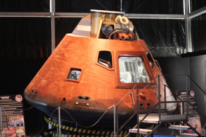

Donna tells us also that she has made a functional Block I using the Terasic DE0 FPGA development board, as well as a custom FPGA board. Those are available at the link listed above.
Mike
Stewart's Block II AGC Project
You can find all the data on Mike's project at these two GitHub
sites:You have to take what I say about Mike's project with a bit of a grain of salt, because Mike has used his Block II simulator as a weapon for justice, rather than treating it as a work of art, and so I have to give him very high marks just on that basis alone.
No, wait, is that what I wanted to say?
I jest, of course, but it may not be so far off. What Mike has done, in his quest to perfect his simulation, has been unique. He has used his hardware simulator to do detailed comparisons against our own software AGC simulator, yaAGC, and to repair yaAGC when he has found it to be broken in some way, along the way becoming a top contributor to the Virtual AGC project. The problems he has found have certainly been subtle, but real. One benefit to Virtual AGC is that bugs preventing yaAGC's use for landing the NASSP/Orbiter LM on the Moon have been fixed, and I got a nice note a few weeks ago (say, in late August of 2016) saying that they had finally landed on the Moon with any program alarms or other problems! But there has apparently been some help flowing in the opposite direction as well, since Mike tells me that Jim Lawton's AGC wire-lister from our own GitHub repository was essential to his work. Go figure! I didn't even know it was there. Good job, Jim!
As part of this, Mike has also been instrumental in acquiring AURORA, a very early AGC LM program, because it was the last AGC program to contain a full suite of test-suite software, which should help him (and us!) to locate yet other subtle bugs in the simulations, if bugs there be.
Mike's project also stands out because he has used open-source tools, so if you have the time, the expertise, and the will, you can reuse the material from his project without having to acquire proprietary tools to do so.
So while I haven't any fancy exclusive-to-VirtualAGC graphics of Mike's work to present to you here, I can't help but recommend it highly to you!
Steven Hauer's Implementation
Although (see preceding section) I don't have fancy graphics from Mike Stewart's project to show you, Steven Hauer has been busy working on implementing Mike's work, and has sent graphics galore. Because I am lazy, I'll let Steven describe it for you himself without any of my normal, pesky reinterpretations or editing.Of course, I know that what you really want to see are the pictures, so here they are. Click any of them to see an enlarged view:OVERVIEW
Here is a physical implementation currently in progress of Mike Stewart's Block II AGC design. I started the process of creating this AGC about 20 months ago by researching available AGC design information and implementation examples. I wanted to create a Block II version of the AGC capable of running the full software. The idea of creating an AGC that mimics the original Block II circuits also appealed to me greatly, so Mike's design based exclusively on NOR gates, inverters, and open collector drivers was exactly what I was looking for.
I have implemented Mike's design of A01 - A24 plus his version of the fixed/erasable memory board B01 exactly as defined in his KiCad schematics available online. The only exception is a change in memory devices used on B01 to options available for 5V logic and through-hole design.
I intend this AGC to demonstrate full functionality so I have brought out the full set of I/O signals and the monitor connector signals. I use the monitor connector signals for basic integration testing via a monitor breakout board of my own design that also provides interfaces to a logic analyzer.
Instead of the transformer coupled I/O of the original AGC, I applied open collector digital drivers for all outputs added directly to the I/O boards. For the inputs I used a simple emitter follower for the high speed inputs and the original 'D' circuits for handling the switch inputs. The simplification of the signal conditioning allowed me to use only 2 interface circuit boards.
My intention is to eventually create a full complement of hardware based simulations of all peripheral devices, uplink/downlink, and a working hardware implementation of the monitor console (also called the core rope simulator) to demonstrate historically accurate monitor functionality.DSKY
The DSKY design is my own. Instead of multiplexing the display drivers like in John Pultorak's DSKY, I have decided to drive the led segments primarily from open collector driver ICs and each 7-segment display will have its own latching BCD decoder/driver instead of latching relays. The translation of the AGC digit values to BCD will be accomplished with some old 32x8 bit fused link bipolar PROMS. Decoding of the AGC OUT1 channel (channel 10 oct) will use a combination of a 4 to 16 decoder and a series of nor-gate based flip flops and gating logic similar to the AGC implementation.
The DSKY push buttons are as close to the orginals as I could find comercially available. They will be wired identical to the original DSKY and make use of the same diode array for encoding.
There will be 4 PCBs in the DSKY:
- Display board
- Display driver board
- Decode and latch board
- I/O board with signal conditioning and the push button diode array
I currently have the first two boards completed.AGC CONSTRUCTION
Each AGC module is fabricated on a 4 layer PCB using 14-pin DIP packages. I initially thought I would wire-wrap each module but after completing A01 and A02 I quickly determined that wire-wrapping the modules was not a viable option so I went with PCBs. I used KiCad for all PCB layout to ensure they matched Mike's schematics.
The chassis is made of aluminum plate and angle stock. The plates for the module connectors and the card guides were ordered online and laser cut.
The backplane is wire-wrapped by hand. I generated a backplane netlist within KiCad and printed out a hard copy. Careful use of highlighter markers and triple counting each pin has so far yielded an error free backplane. The backplane took about 10 months of part time effort (several hundred hours) to complete and I ended up using about 2200 feet of wire.CURRENT FUNCTIONALITY
Pictures show completed AGC with modules A01 - A24 plus two input conditioning boards. I've included some logic analyzer screen shots showing the first time I got GOJAM working and also a couple screen shots showing the 4 instructions of the startup entry vector executing from the validate code. The screen shots showing instruction names are driven from signals via the monitor connector breakout board.
Current computer runs validation program successfully through to completion. I don't have a DSKY yet so I confirmed successful completion by watching '77' be written to CH10 (oct) for the DSKY signaling the sucessful completion of the program.
I have also loaded Luminary 210 and the program runs without any alarms other than 'NO ATT' which makes sense since there is no IMU (yet). I can watch PINBALL (the DSKY control routine) clear the DSKY via my logic analyzer and observe some of the interrupt driven idle behavior of Luminary at this point.FUTURE PLANS
After the DSKY is complete, I plan on creating an interface to allow my physical AGC / DSKY to connect to the Orbiter spaceflight simulator, with the NASSP 8.0 Apollo-mission add-on. Instead of interfacing this package to yaAGC, I will instead connect it to an adaptor that will take the data stream created for the 'ya' packages and translate the packet data to/from the correct hardware signals to interface with my AGC.— Steven Hauer, 11/2018
 A01 - A07 + A13 |  A01 - A15 + B01 |  A05 |
 Backplane 1 |  Backplane 2 |  Backplane 3 |
 Chassis 1 |  Chassis 2 |  Monitor Board 1 |
 Monitor Board 2 |  Running with Monitor Board |  GOJAM Control Signals |
 Start Vector 1 |  Start Vector 2 |  DSKY Button Wiring |
 DSKY Display 1 |  DSKY Display 2 |  DSKY Display Test |
Dario Kubler's Apollo 16 AGC/DSKY Simulation Project
Dario was part of a team (largely people from the Fondazione Osservatorio Astronomico M13) that created a 1:1 scale mockup of the Apollo 16 Command Module ("Casper") for 2012 exhibition called Esplorando, in Varese, Italy, near Milan. Dario's part of the task was to create a working DSKY, which would be interfaced via bluetooth to a PC running the Artemis AGC program in our yaAGC AGC simulator software. Of course, yaAGC has no direct bluetooth support, but Dario wrote a C++ program that interfaced between yaAGC and bluetooth.Apparently, the exhibition went very well. Charlie Duke, the LMP for Apollo 16, was one of the visitors. I'm told that he entered the capsule, played with the AGC/DSKY combo, said that it was very realistic, and passed his compliments to us. So ... thanks, Dario!
Actually, there's a YouTube video, with Charlie Duke, of the Casper mockup's unveiling ceremony:
After Esplorando, the capsule was moved to the flight museum located in the Malpensa International Airport, in Milan.
Here's a YouTube link to a short video of Dario's AGC/DSKY combo in operation:
Since then, Dario has managed to port yaAGC into an embedded system, based on the PIC32-MZ (a 32-bit MIPS-based MCU), with 2MB of flash memory and 512KB of RAM, using the XC32 gcc-based compiler. Dario himself works at Microchip (the manufacturer) himself, so that seems like a natural progression.


{kind=link}
{kind=link}
{kind=link}
{kind=link}
{kind=link}
{kind=link}
{kind=link}
{kind=link}
{kind=link}
{kind=link}
{kind=link}
{kind=link}
{kind=link}
{kind=link}
{kind=link}
{kind=link}
{kind=link}
{kind=link}
{kind=link}
{kind=link}
{kind=link}